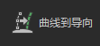

将曲线转化回导向，这样您就可以继续控制其形状并编辑它们。编辑导向后，可以使用导向到曲线。
显示正在编辑的描述名称。
设置导向拉伸的量以到达曲线尖端。
控制从基础到尖端导向与曲线形状的贴合程度。
可以根据导向与曲线的关系添加导向。
“搜索类型”(Search Type)结果决定添加导向的位置，使用这些结果选择曲线。
选择基础与导向位置接近的曲线。
选择名称与导向关联的曲线，然后将导向添加到曲面。
选择“名称关联”(Name Association)会禁用“尖端捕捉量”(TipSnapAmount)和“删除曲线”(Delete Curves)。
将选定曲线转化为导向后删除这些曲线。
使用 nHair 动态输出曲线驱动导向形状和动画时，启用“保留动态链接”(Preserve Dynamic Link)。请参见使用 nHair 设置导向的动画。